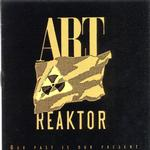

| Artist: | Art Reaktor |
| Title: | Our PAst Is Our Present |
| Label: | Stereo Periferic BGCD 068 |
| Length(s): | 74 minutes |
| Year(s) of release: | 2000 |
| Month of review: | {04/2001] |
| 2) | Laboratory | 4.24 |
| 3) | A Day | 5.26 |
| 4) | Why? | 7.43 |
| 5) | Tempest | 4.51 |
| 6) | Ooo-aaa, Ooo-aaa | 4.44 |
| 8) | Headache | 4.17 |
| 9) | Freedom | 8.51 |
| 11) | Sudden Voices | 11.29 |
| 12) | Our Past Is Our Present | 6.25 |
The music becomes more industrial and where words in the lyrics are transpositioned to obtain the next verse. The chorus, if want to call it that, is a bit rap like. The music here harks back to early eighties German industrial outfits, but does have a groove. Not something progressive fans will like.
A Day is quite an abrasive track with loud keyboards at the end. The lyrics have a strong tendency at criticism, something which was hardly done in those days. Why? is a long track which develops slowly with a lot of percussion. The music is not so melodic (as we might be used to), but the song focusses instead on the groove. And there is also plenty of experimentation.
Tempest brings us more tense noises and spoken vocals. I especially like the free from percussive drumming, lined with swirly keyboards. Ooo-Aaa, Ooo-Aaa is more or less instrumental and again combines heavy percussion with Hassell like trumpet and in thise case also some rather melodic keyboards.
Storm In The Bathroom has strong parallels with Laboratory, it seems like a blueprint thereof. Again, the music is more focussed on groove and even features some bluesy harmonica playing.
A kind of space rock we hear on Headache with its swirling cosmic tapestries, but also Isham/Hassell like trumpet playing. The drummer takes it rather easy this time. Freedom is a long track sung in Hungarian (don't worry the translation is in the booklet). A low bass line bubles beneath the vocals, giving me the impression of something you might find on the ECM label. The music continues to progress in relaxed fashion when the guitar of Varga sets in. All a bit uneventful though.
It's Easy For You Hungary contains a lot of keyboard sounds and can be compared to ELP at their blurpiest. The vocal performance of Shiels is quite confronting. The guitar solo is cutting edge. It can be heard now that this is a live track (as are the two previous ones).
Sudden Voices opens as a drum solo, but vocals do enter the picture later on and a bumbling bass. Halfway a groove enters into the track, and we hear some drills going. Industrial stuff with a groove. Hmm. In the final part of this track the guitar rips through all again, and the percussionists end the track.
Final track is the title track, which opens percussively (again). Bleepy keys, choral vocals give an impression similar to Serge Blenner. One of the more melodic tracks, accompanied by loud thunderous bangs. The song ends on a moody note.